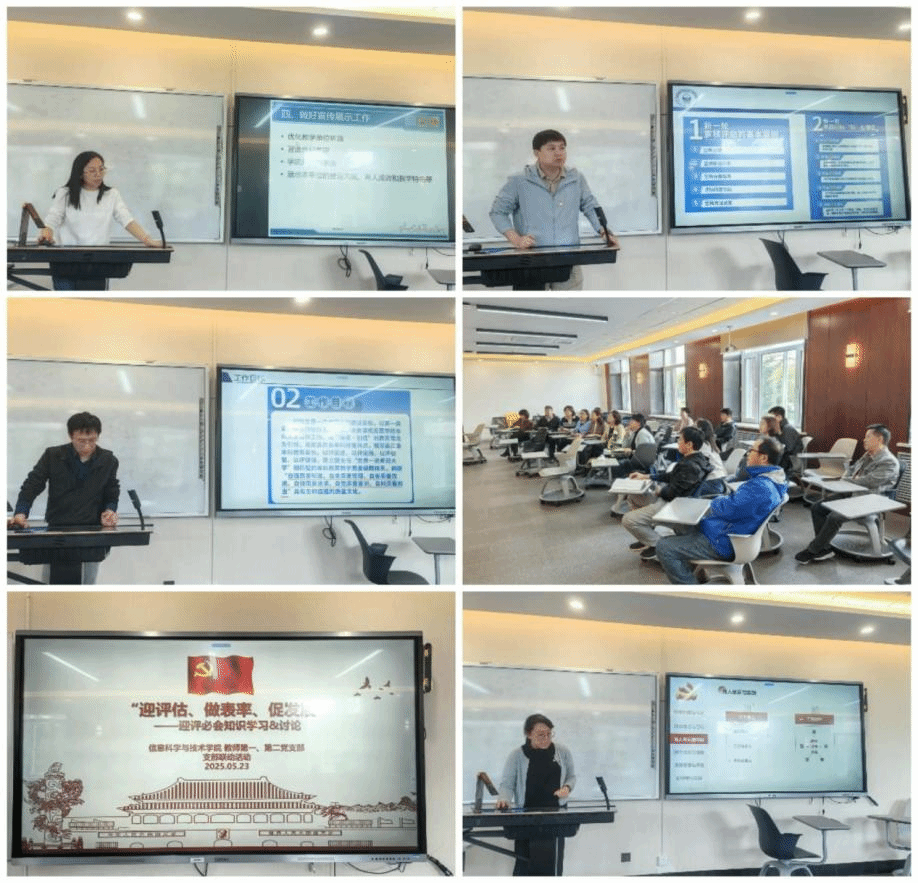

以新一轮本科教育教学审核评估为契机，我院教师第一、二党支部于近日联合举办了“迎评应会知识学习”周党日活动。
活动首先进行的是两支部支委领学分享环节。王姣、万川、张哲、侯鲲、齐妙五名支委在会前自学基础上，分别领学“东北师范大学质保理念、质量文化、教风、学风”“新一轮本科教育教学审核评估的目标意义、基本原则、主要内容及特点”“新一轮本科教育教学审核评估的重点知识、关键要点和热点名词”“东北师范大学本科教育教学评估工作方案与本科教学质量年实施方案”“新一轮本科教育教学审核评估中学院、教师和学生如何做好准备工作”等内容；随后，两支部教师围绕立德树人根本任务，结合学习内容开展了讨论，党委书记郑燕林进行了本科教学审核评估相关知识的补充和深入讲解。教师第一党支部王姣主持活动。
本次支部联动活动的开展，充分体现了教师一二党支部坚持cdfa鏈结、问题驱动，着力把党建融入业务工作、融入党员需求、融入群众关切，推进党建与业务深度融合的使命感和自觉性，发挥了党支部在推动业务工作、服务中心工作中的战斗堡垒作用。
初审：王姣
复审：滕继波
终审：郑燕林